第 12 回 CI と運用¶
所要時間の目安: 4 時間 / 前提: 第 3・9・10・11 回
この回のゴール¶
CI (継続的インテグレーション) が、何のためにあるかを、説明できる。
GitHub Actions の部品 (イベント・ジョブ・ステップ・マトリクス・条件・秘密) を、読める。
このリポジトリの CI が、どの検査で、何を守っているか を、対応づけて説明できる。
YAML をデータとして読んで、設定の約束 (秘密の渡し先など) を、検査できる。
HTML 版 (
site/) のずれ検出 (ハッシュの印) の仕組みを、説明できる。日常の運用 (文書の更新・公開の開始と停止・障害対応) の手順を、実行できる。
検証できていないこと を、正直に区別して書ける。
1. CI とは¶
CI (Continuous Integration) は、変更を取り込むたびに、検査を自動で走らせる 仕組みです。
手作業 |
CI |
|---|---|
検査を、忘れる・省く |
毎回、必ず 走る |
人の環境 (入れた道具の版) で結果が違う |
まっさらな環境 で走る (再現できる) |
失敗に気付くのが、遅い (公開後) |
変更の直後 に気付く (PR の画面で) |
「自分の環境では動く」 |
誰の環境でもない、共通の環境 |
早く失敗するほど、直すのが安い。変更を書いた直後なら、原因は、その変更の中にあります。公開後に気付くと、探す範囲が広く、被害も出ています。

CI の仕事は、ひとつの単純な約束 です。「コマンドが、終了コード 0 で終わること」。0 以外なら、そのステップは失敗し、ジョブも失敗し、PR に赤い印が付く。 だから、第 8 回の CLI は、成功は 0、失敗は 0 以外 を、徹底していました。
2. GitHub Actions の部品¶
ワークフロー は、.github/workflows/*.yml に書く YAML ファイルです。

キー |
意味 |
このリポジトリでの使い方 |
|---|---|---|
|
いつ動くか |
|
|
CI に与える 権限 |
|
|
環境変数 |
|
|
動くマシン |
|
|
同じジョブを、値を変えて 複数回 |
Python |
|
先に終わるべきジョブ |
|
|
条件 |
公開は、 |
|
環境 (保護ルールを付けられる) |
|
|
同時に動かさない |
公開は同時に 1 つだけ |
|
設定値 / 秘密 |
URL などは |
|
既製の部品 |
|
|
コマンド |
|
マトリクスで 2 つの版を試す理由: 対応する 最小の版 (3.11) と 最新 (3.13) の両端が動けば、間も動く可能性が高い。
fail-fast: false で、片方が落ちても、もう片方を最後まで走らせ、両方の結果を見られる ようにする。
3. YAML をデータとして読む¶
ワークフローは、ただの データ です。読み込んで、約束を テストできます (第 9 回の「設定ファイルも、テストする」)。
# 実行できる
from pathlib import Path
import docspipeline
import yaml
root = Path(docspipeline.__file__).parents[1]
ci = yaml.safe_load((root / ".github" / "workflows" / "ci.yml").read_text(encoding="utf-8"))
print("最上位のキー :", list(ci))
print("ジョブ :", list(ci["jobs"]))
for name, job in ci["jobs"].items():
print(f" {name:8} needs={job.get('needs', '-')!s:14} ステップ数={len(job['steps'])}")
# 出力
最上位のキー : ['name', True, 'permissions', 'env', 'jobs']
ジョブ : ['test', 'docs', 'publish']
test needs=- ステップ数=6
docs needs=- ステップ数=12
publish needs=['test', 'docs'] ステップ数=5
落とし穴: 最上位のキーの 2 番目が、'on' ではなく True です。
YAML 1.1 の規則では、on は 真偽値の true と解釈されます (yes・no・off も同じ)。GitHub は on と読みますが、PyYAML は True にします。
この資料のテストは、jobs のように、この罠に当たらないキー だけを読んでいます。
秘密の渡し先を、検査する¶
第 9 回の約束 (「トークンは、公開のステップだけ」) を、CI の設定そのもの で確かめます。
# 引用: tests/test_robustness.py::test_the_api_token_reaches_only_the_publish_step
def test_the_api_token_reaches_only_the_publish_step(tmp_path):
"""トークンを job 全体の env に置くと、pip / npm のインストール scripts (依存の更新で変わりうる) からも読める。"""
for name, workflow in _workflows(tmp_path).items():
job = workflow["jobs"]["publish"]
assert "CONFLUENCE_API_TOKEN" not in job.get("env", {}), name
holders = [s for s in job["steps"] if "CONFLUENCE_API_TOKEN" in s.get("env", {})]
assert [s["name"] for s in holders] == ["Publish to Confluence"], name
assert "secrets.CONFLUENCE_API_TOKEN" in holders[0]["env"]["CONFLUENCE_API_TOKEN"], name
# 実行できる
from pathlib import Path
import docspipeline
import yaml
root = Path(docspipeline.__file__).parents[1]
ci = yaml.safe_load((root / ".github" / "workflows" / "ci.yml").read_text(encoding="utf-8"))
publish = ci["jobs"]["publish"]
print("ジョブ全体の env のキー:", sorted(publish["env"]))
holders = [s["name"] for s in publish["steps"] if "CONFLUENCE_API_TOKEN" in s.get("env", {})]
print("トークンを持つステップ :", holders)
others = [name for name, job in ci["jobs"].items() if name != "publish" and "CONFLUENCE_API_TOKEN" in repr(job)]
print("他のジョブに、トークンの名前がある?:", bool(others))
print("公開の条件 (if) :", publish["if"])
# 出力
ジョブ全体の env のキー: ['CONFLUENCE_PARENT_PAGE', 'CONFLUENCE_SERVER_URL', 'CONFLUENCE_SERVER_USER', 'CONFLUENCE_SPACE_KEY', 'DOCSPIPELINE_PUPPETEER_CONFIG']
トークンを持つステップ : ['Publish to Confluence']
他のジョブに、トークンの名前がある?: False
公開の条件 (if) : github.event_name == 'push' && github.ref == 'refs/heads/main' && vars.CONFLUENCE_PUBLISH == 'true'
ジョブ全体の
envに、トークンは無い (4 つの設定値と puppeteer の設定だけ)。トークンを持つのは、公開のステップだけ。
pip installやnpm installは、依存の インストール用スクリプト を走らせることがある。そこへ、トークンを渡さない。
4. このリポジトリの CI¶

test ジョブ¶
ステップ |
コマンド |
守るもの |
|---|---|---|
依存を入れる |
|
本番と同じ依存で試す |
Lint |
|
書き間違い・未使用の import・古い書き方 |
書式 |
|
書式の不一致 (直さず、検出だけ) |
テスト |
|
第 10 回の全てのテスト (実ビルド・図・HTML 版・講義を含む) |
docs ジョブ¶
ステップ |
コマンド |
守るもの |
|---|---|---|
ビルド (HTML) |
|
警告 = 失敗 ( |
ビルド (Confluence 形式) |
|
Confluence に載せられない書き方を、公開の 前 に見つける (ネットワーク不要) |
例のビルド |
|
雛形・サンプルが壊れていない |
図の書き出し |
|
|
Mermaid の書式 |
|
標準の |
カバレッジ |
|
公開 API の docstring が、全てある |
リンク切れ |
|
週 1 回・手動のときだけ。外部サイトは、こちらの変更と無関係に落ちるため、PR を止めない |
publish ジョブ¶
約束 |
設定 |
|---|---|
先に |
|
main への反映だけ |
|
明示的に有効にした場合だけ |
|
同時に 2 つ走らない |
|
承認や制限を付けられる |
|
トークンは公開のステップだけ |
上の検査 |
道具の版を固定 |
|
コマンドの終了コードが、CI の判定¶
# 実行できる
import subprocess
import sys
import tempfile
from pathlib import Path
CODE = '"""m."""\n\n\ndef good():\n """ok."""\n\n\ndef bad():\n pass\n'
with tempfile.TemporaryDirectory() as tmp:
(Path(tmp) / "pkg").mkdir()
(Path(tmp) / "pkg" / "m.py").write_text(CODE, encoding="utf-8")
for threshold in (100, 50):
r = subprocess.run([sys.executable, "-I", "-m", "docspipeline", "coverage", "pkg", "--fail-under", str(threshold)],
cwd=tmp, capture_output=True, text=True, encoding="utf-8")
summary = [line for line in r.stdout.splitlines() if "カバレッジ:" in line]
print(f"基準 {threshold:>3}% → 終了コード {r.returncode} / {summary[0]}")
# 出力
基準 100% → 終了コード 1 / docstring のカバレッジ: 66.7% (2/3)
基準 50% → 終了コード 0 / docstring のカバレッジ: 66.7% (2/3)
3 つの関数のうち 2 つに docstring がある (66.7%)。基準が 100% なら 終了コード 1 = CI が赤、50% なら 0 = 緑です。
同じ測定結果でも、基準 (閾値) で、合否が変わる。基準は、設定として明示します (--fail-under)。
5. 手元で CI を再現する¶
CI の失敗を、手元で再現 できないと、直せません。CI が走らせるコマンドは、そのまま手元でも走ります。
目的 |
コマンド |
|---|---|
依存を入れる |
|
Lint と書式 |
|
速いテストだけ |
|
全てのテスト |
|
文書のビルド |
|
環境の確認 |
|
図を作り直す |
|
Mermaid の書式を直す |
|
講義の引用・出力を更新 |
|
HTML 版を作り直す |
|
環境の差に注意: CI は ubuntu-latest の まっさらな環境 です。手元で通って CI で落ちるときの、典型的な原因です。
症状 |
疑うこと |
|---|---|
手元だけ通る |
手元にだけ入っている道具 (mmdc・doxygen)、残っている生成物 ( |
CI だけ通る |
CI が まっさらな環境 なので、手元の汚れが原因 ( |
Python の版で結果が違う |
3.11・3.12・3.13 で、 |
時々だけ落ちる |
順序・時刻・キャッシュ (第 10 回の「決定的であること」) |
6. HTML 版 (site/) のずれを検出する¶
Sphinx で作った HTML を、site/ に コミット しています (ブラウザで site/index.html を開けば、サーバーなしで読める)。
すると、文書を変えたのに HTML を作り直し忘れる 事故が起きます。これを、ハッシュの印 で検出します。

# 引用: tools/build_site.py::compute_hash
def compute_hash(root: Path = ROOT) -> str:
"""元の文書・ソース・図の内容から、ハッシュを作る。パスと内容の両方を含める。"""
digest = hashlib.sha256()
for path in source_files(root):
digest.update(path.relative_to(root).as_posix().encode("utf-8"))
digest.update(b"\0")
# 改行コードの違い (Windows など) でハッシュが変わらないようにする
digest.update(path.read_bytes().replace(b"\r\n", b"\n"))
digest.update(b"\0")
return digest.hexdigest()
# 引用: tools/build_site.py::source_files
def source_files(root: Path = ROOT) -> list[Path]:
"""ハッシュの元になるファイルを、整列して返す。"""
files = []
for name in SOURCES:
base = root / name
for path in sorted(base.rglob("*")):
if not path.is_file() or path.suffix in SKIP_SUFFIXES:
continue
if SKIP_DIRS.intersection(path.relative_to(base).parts):
continue
files.append(path)
return files
設計の判断を読み解きます。
判断 |
理由 |
|---|---|
HTML の出力そのもの を比べず、元 のハッシュを比べる |
HTML は、Sphinx・テーマの版で変わる。元が同じなら「同じ内容」と言える |
ハッシュに パスも 含める |
内容が同じでも、ファイルを改名・追加したら、別物 |
区切りに |
|
改行コードを |
Windows (CRLF) で、ハッシュが変わるのを防ぐ |
|
ファイルの列挙順に依存しない (決定的) |
生成物・キャッシュ ( |
それらは、元ではない |
|
印を書くと、印が変わる、という循環を避ける |
# 実行できる
import sys
import tempfile
from pathlib import Path
import docspipeline
sys.path.insert(0, str(Path(docspipeline.__file__).parents[1] / "tools"))
import build_site
with tempfile.TemporaryDirectory() as tmp:
root = Path(tmp)
(root / "docs" / "_build").mkdir(parents=True)
(root / "docspipeline").mkdir()
(root / "docs" / "a.md").write_text("# A\n", encoding="utf-8")
(root / "docspipeline" / "m.py").write_text('"""m."""\n', encoding="utf-8")
base = build_site.compute_hash(root)
print("ハッシュの長さ :", len(base))
(root / "docs" / "_build" / "junk.html").write_text("x", encoding="utf-8")
print("生成物を足しても同じ :", build_site.compute_hash(root) == base)
(root / "docs" / "a.md").write_bytes(b"# A\r\n")
print("改行コードだけ違っても同じ :", build_site.compute_hash(root) == base)
(root / "docs" / "a.md").write_text("# B\n", encoding="utf-8")
print("文書の中身が変われば違う :", build_site.compute_hash(root) != base)
# 出力
ハッシュの長さ : 64
生成物を足しても同じ : True
改行コードだけ違っても同じ : True
文書の中身が変われば違う : True
運用: 文書・docstring・図を変えたら、python tools/build_site.py で作り直します (mmdc が要る)。忘れると、pytest (と CI) が落ちます。
この仕組みが検出できないこと: ハッシュは、元が変わったか を見るだけです。
site/の HTML を手で書き換えた 場合は、検出できません (HTML の中身まで、毎回再生成して比べるのは、版の違いで揺れるため、あえてやっていません)。site/は生成物で、手で直さない、という約束を守ってください。
7. 日常の運用¶
文書を更新する¶

Confluence への公開を、始める・止める¶
操作 |
手順 |
|---|---|
始める |
①専用のスペースと親ページを用意 → ②手元で |
止める |
変数 |
トークンを替える |
シークレット |
止める操作が、1 か所で、速い ことが大事です (事故のとき、考えずに止められる)。
障害対応¶
症状 |
まず見るもの |
対処 |
|---|---|---|
CI の docs ジョブが赤 |
ログの最初の |
警告の原因を直す (消すための例外は最後の手段) |
図がコードのまま出る |
|
|
|
Chromium のサンドボックス |
|
公開が意図せず走った/走らない |
|
変数と条件を確認 |
公開が途中で失敗 |
接続テストの出力 (トークンは伏せられる) |
認証・権限・親ページの確認 |
site が古いと言われる |
|
作り直してコミット |
8. 保守の周期¶
文書の仕組みは、作って終わり ではありません。外の世界 (Sphinx・拡張・Confluence・Node) が変わるからです。 いつ・何を見直すか を決めておくと、気付くのが遅れません。以下は、このリポジトリの構成から導いた 推奨 です (自動化されているのは、表の「自動」の列だけ)。
周期 |
見ること |
自動 |
手順 |
|---|---|---|---|
変更のたび |
lint・テスト・ビルド・図・Mermaid の書式・カバレッジ |
CI (PR ごと) |
赤になったら、その PR で直す |
週 1 回 |
外部リンクの切れ |
CI ( |
|
月 1 回 (推奨) |
依存の新しい版 (Sphinx・furo・myst-parser・confluencebuilder) |
手動 |
手元で |
半年に 1 回 (推奨) |
|
手動 |
|
新しい版を使うとき |
Python の対応範囲 |
CI の matrix |
|
講義・学習資料を直したとき |
引用と出力 |
|
|
「推奨」の行は、この資料が提案する運用 で、リポジトリの中に強制する仕組みはありません。チームの事情に合わせて、決め直してください。
依存を上げるときの順序

範囲指定 (>=) と固定 (==) の使い分け: ライブラリとして配る pyproject.toml は 範囲指定 (利用者の環境と衝突しにくい)。
公開 (トークンを使う) ジョブで動かす 道具 は 固定 (mermaid-cli@12.0.0)。固定した版は、自分で上げる 責任が生じます。
9. 検証できていないこと¶
自分が確かめた範囲 と 確かめていない範囲 を、分けて書くのも、運用の一部です。この資料の時点で、次の項目は、手元では確かめていません。
項目 |
状況 |
|---|---|
GitHub 上での |
未検証。YAML の構造と約束は、テストで読んで確かめた。実際の実行は、GitHub 上で初めて走る |
|
未検証。リポジトリの設定で、人が付ける (承認者・対象ブランチの制限など) |
実際の Confluence への公開 |
未検証。認証情報がなく、 |
Windows での動作 |
一部のみ。コマンド分割・ |
Python の版 |
3.11 と 3.13 は、手元で |
将来の版 (Sphinx・furo・confluencebuilder) |
範囲指定の依存 ( |
「確かめた」と書けるのは、実際に確かめたことだけ です。推測を事実のように書くと、運用で、誤った安心を生みます。
ハンズオン¶
ruff check .とruff format --check .を実行する。わざと、docspipeline/files.pyに使わないimport osを足して、ruff checkが何を言うかを読む (戻すこと)。docspipeline coverage docspipeline --fail-under 100; echo $?を実行し、終了コードを確かめる。ci.ymlを読み込み、publishジョブのifを表示するスクリプトを書く (本文の例を参考に)。python tools/build_site.py --checkの結果を確かめる。次に、docs/runbook.mdに空行を 1 つ足して、もう一度実行する (戻すこと)。
確認問題¶
CI が、手作業の検査より優れている点を、3 つ挙げてください。
needs・if・concurrencyは、それぞれ何を守りますか。PyYAML で
ci.ymlを読むと、onがTrueになるのは、なぜですか。どう対処しますか。トークンを、
publishジョブ全体のenvではなく、1 つのステップのenvに置く理由は何ですか。リンク切れの検査 (
linkcheck) を、PR ごとに走らせず、週 1 回にしているのは、なぜですか。site/の印のハッシュに、ファイルの パス を含めるのは、なぜですか。区切りに\0を使うのは、なぜですか。HTML 版の「ずれ検出」が、検出できないことは何ですか。
「手元では通るが、CI で落ちる」とき、まず何を疑いますか。3 つ挙げてください。
(書く問題)
ci.ymlを読み込み、permissionsがcontents: readだけ であることを確かめるテストを書いてください。
解答¶
①毎回必ず走る (忘れない・省けない)。②まっさらな環境で走る (再現できる)。③変更の直後に気付く (PR の画面で。直すのが安い)。
needs: 前提のジョブ (テストと文書ビルド) が 成功してから 公開する。if: 条件を満たすとき (main への push かつ変数が'true') だけ公開する。concurrency: 公開が 同時に複数 走って、互いに壊し合うのを防ぐ。YAML 1.1 では、
onが真偽値のtrueと解釈される (yes・offなども同様)。PyYAML は 1.1 に従う。 対処:jobsのように影響を受けないキーだけを読む。または、ci[True]で読む。キーを文字列として扱いたいなら、読み込み時に変換する。pip installやnpm installが走らせる、依存のインストール用スクリプトから、トークンを読めなくする ため (最小権限)。 ジョブ全体のenvに置くと、そのジョブの 全てのステップ から読める。外部サイトは、こちらの変更と無関係に 落ちる (一時的な停止・移転)。PR ごとに走らせると、無関係な理由で PR が赤くなる。 週 1 回なら、切れたリンクに気付きつつ、日々の作業を止めない。
内容が同じでも、ファイルを改名・追加した ら別物だから (パスが無いと、改名を検出できない)。
\0は、連結の曖昧さ を防ぐ (パスa+ 内容bcと、パスab+ 内容cが、同じバイト列にならない)。site/の HTML を 手で書き換えた こと (元の変更だけを見るため)。site/は生成物で、手で直さない、という約束で守る。①手元にだけ入っている道具 (mmdc・doxygen)。②手元に残った生成物・キャッシュ (
docs/_build)。③Python や依存の 版の違い (3.11 と 3.13 など)。例 (実行して確かめてある):
# 実行できる
from pathlib import Path
import docspipeline
import yaml
def only_reads_the_repository(workflow):
return workflow.get("permissions") == {"contents": "read"}
root = Path(docspipeline.__file__).parents[1]
ci = yaml.safe_load((root / ".github" / "workflows" / "ci.yml").read_text(encoding="utf-8"))
print("ci.yml は、読み取りだけ:", only_reads_the_repository(ci))
print("権限を足した場合 :", only_reads_the_repository({"permissions": {"contents": "write"}}))
# 出力
ci.yml は、読み取りだけ: True
権限を足した場合 : False
(テストにするなら、assert only_reads_the_repository(ci) と書きます。各ジョブに permissions が書かれていれば、そちらが優先されるので、ジョブごとの確認も要ります。)
まとめ¶
概念 |
要点 |
このリポジトリでの例 |
|---|---|---|
CI |
変更のたびに、まっさらな環境で検査。終了コードが判定 |
|
Actions の部品 |
on・jobs・steps・matrix・needs・if・secrets |
3 ジョブ |
最小権限 |
|
|
YAML をデータで |
読み込んで約束を検査。 |
|
再現 |
CI のコマンドを、手元でも |
一覧表 |
ずれ検出 |
元のハッシュの印。パス・改行・順序に注意 |
|
運用 |
更新・開始と停止・障害対応 |
runbook |
正直さ |
確かめた範囲と、未検証の区別 |
「検証できていないこと」 |
次回¶
第 13 回 総合演習: ここまでの全てを使って、新しい機能を 1 つ、最初から最後まで 足します。